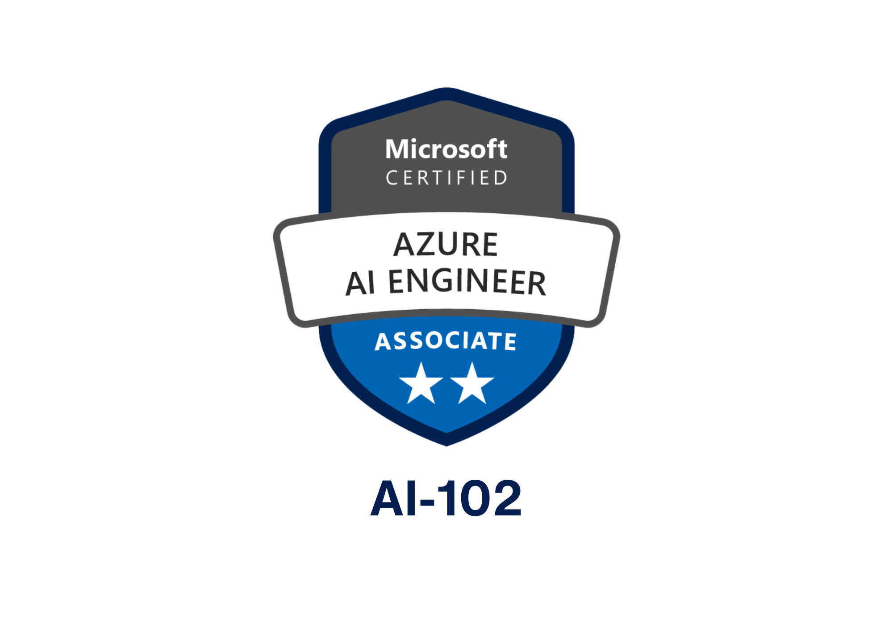
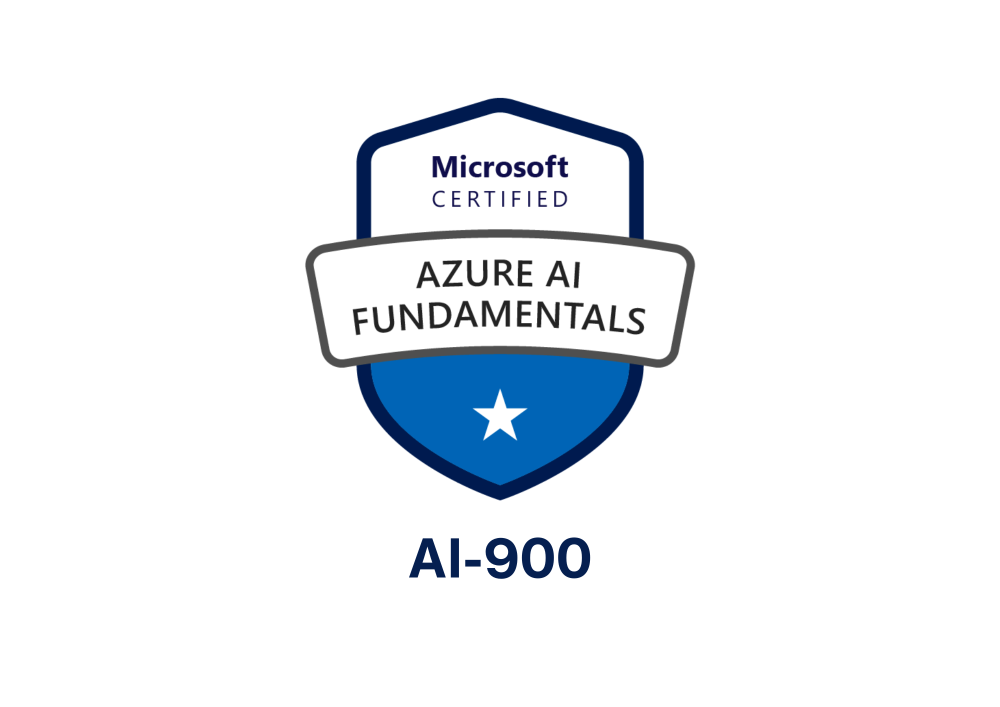

Human + AI Strategist
Builder, connector, and storyteller for People Tech.
I bring design thinking, HR domain depth, and hands‑on AI tinkering to ship measurable outcomes.
Highlights
$1.5–$3MDeals influenced (workshops)
2 + 1Quick wins + strategic bet
2Microsoft AI certs
🎙︎Agents Among Us (host)
Certifications


Pivotal Projects — fast reads
Mapped to People/HR, Technology, and Design Thinking.
Microsoft — AI Sales Agent for Sellers
- People/HR: Equips sellers with rich customer context for better conversations.
- Technology: LLM agent with RAG over CRM + notes; call prep and next‑best‑action.
- Design Thinking: Empathy mapping with sellers → fast, one‑screen workflow.
Sam’s Club — Strategy & Roadmap Workshop
- People/HR: Workforce transformation objectives clarified for leadership.
- Technology: AI/analytics “north star” and KPI instrumentation plan.
- Design Thinking: JTBD framing → landed a $1.5M–$3M services engagement.
Pepsi — Executive Alignment
- People/HR: Improved employee experience via HR + IT alignment.
- Technology: Productivity and automation opportunities cataloged.
- Design Thinking: Co‑created playbooks; sponsor asked for 3 more workshops.
Walgreens Boots Alliance — Pharmacist Enablement
- People/HR: Reduced burnout and improved service quality.
- Technology: AI assist for triage, onboarding, and knowledge lookup.
- Design Thinking: Built around pharmacist JTBD for safety and speed.
Podcast — Agents Among Us
Co‑host with Will Johnson (Google DS). We explore practical Human+AI patterns, ethics, and product stories.
Tinkerer / Maker
3D printing shop, SmartPantry AI, and LifeOS. I prototype weekly — agents, prompts, data flows, and micro‑experiences.
Working Style
Connector across HR, IT, and Data; bias toward prototyping; governance‑by‑design; outcome‑obsessed.